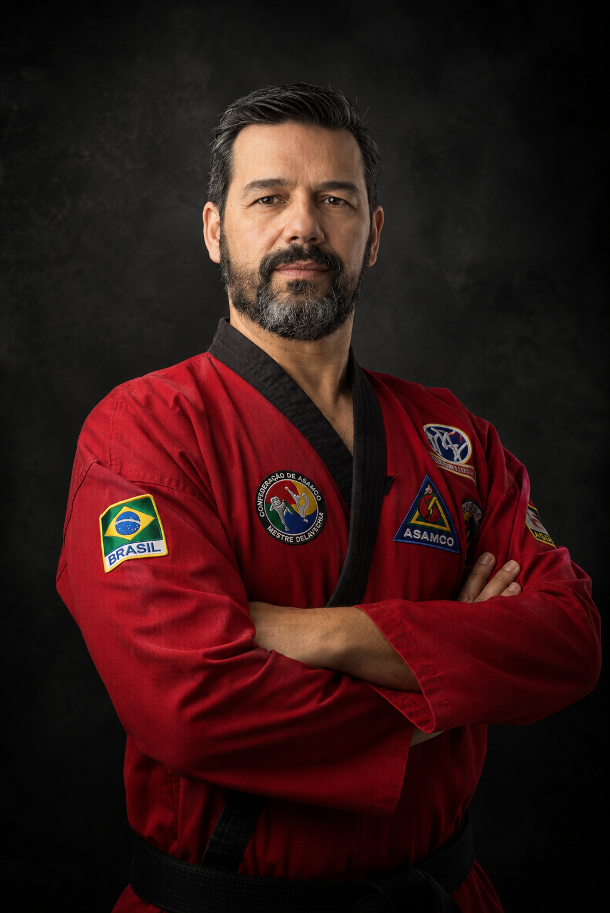

Da faixa preta à formação de instrutores: minha trajetória no ASAMCO
Uma reflexão sobre o caminho desde a graduação em 1992 até a formação de gerações de instrutores.
Ler artigo →Sistema ASAMCO de Arte Marcial · Erechim, RS
Grão-Mestre do Sistema ASAMCO Martial Arts — levando o Alto Uruguai a disciplina, tradição e desenvolvimento humano através da arte marcial desde 1994.

Sobre
Geovani Bitencourt Delavechia formou-se faixa preta 1º Dan no Sistema ASAMCO em 1992. Em 1994, iniciou suas atividades como instrutor de arte marcial em Passo Fundo e Erechim/RS, levando ao Alto Uruguai gaúcho uma arte marcial de combate individual defensivo focada no desenvolvimento físico, intelectual e emocional do praticante.
Esse início como instrutor consolidou sua trajetória, que o levou, ao longo dos anos, ao título de Grão-Mestre — formando gerações de faixas pretas na região e representando diretamente o fundador do estilo, Supremo Grão-Mestre Roberto Nochang Carneiro.
[Terceiro parágrafo: o que motiva você hoje — ensino, formação de instrutores, expansão do sistema, legado que deseja deixar. Escreva em suas próprias palavras.]
Trajetória
Sistema / Método
Base tradicional de percussão — socos, chutes e defesas fundamentais do estilo.
Projeções, chaves de imobilização e defesa pessoal em curta distância.
Condicionamento físico e aplicação prática das técnicas em ritmo de combate.
Defesa pessoal aplicada, com foco em situações reais de proteção individual.
Graduações e Reconhecimentos
Sistema ASAMCO de Arte Marcial, 1992.
Assembleia Legislativa do Estado de São Paulo, 2019.
Unyleya, 2021.
Mídia
Blog
Uma reflexão sobre o caminho desde a graduação em 1992 até a formação de gerações de instrutores.
Ler artigo →Como a pós-graduação em Artes Marciais Mistas influenciou minha forma de treinar alunos.
Ler artigo →Disciplina, propósito e desenvolvimento humano na formação de novos instrutores.
Ler artigo →